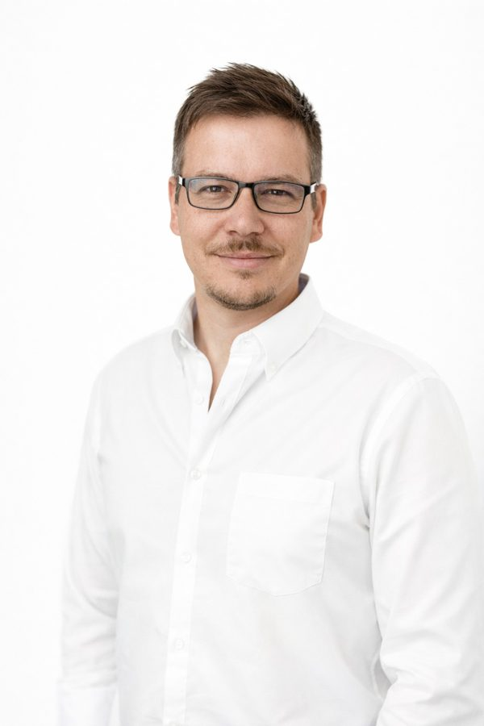
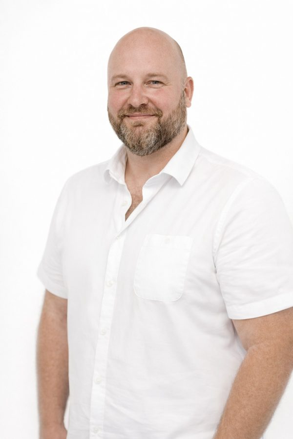
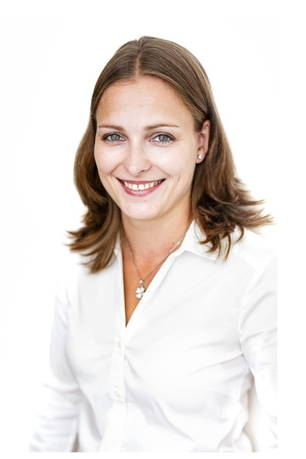
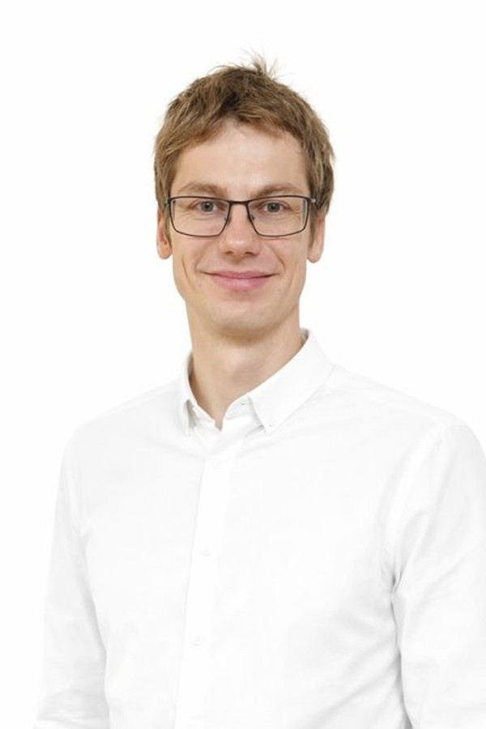
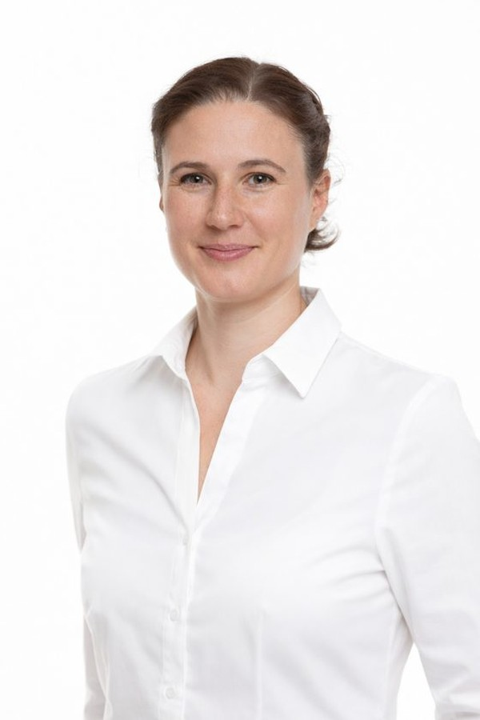
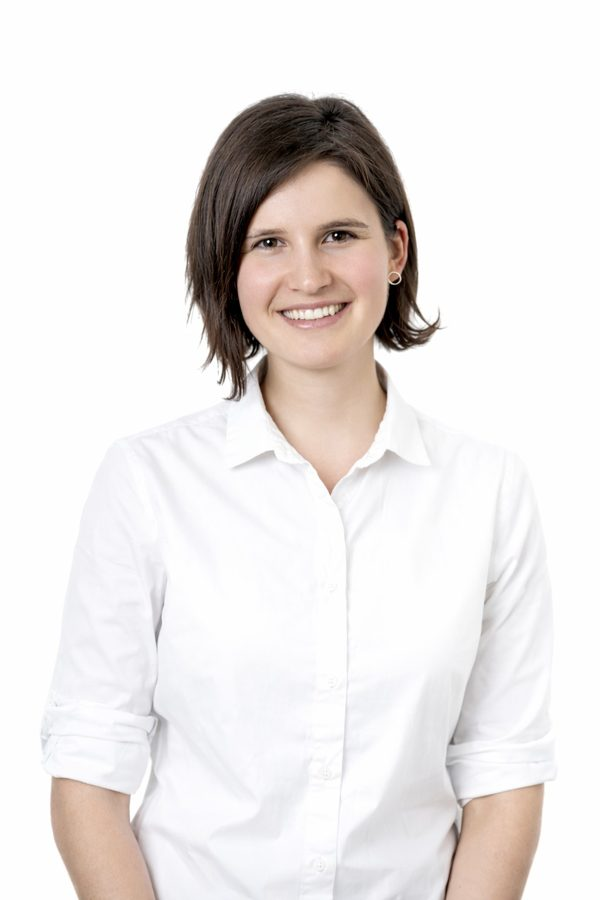
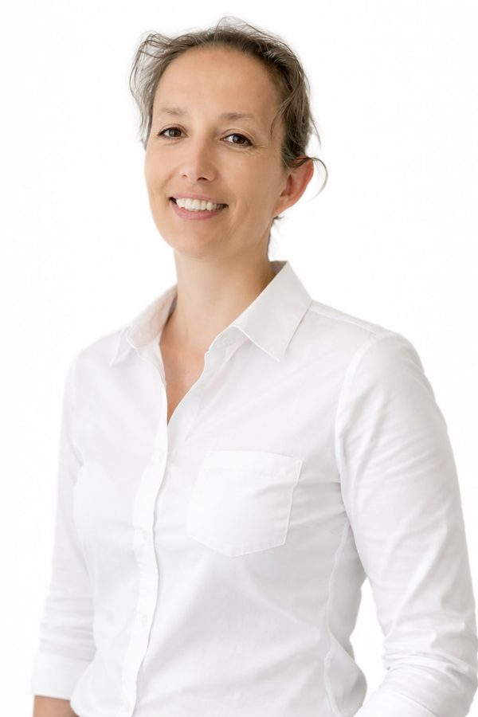
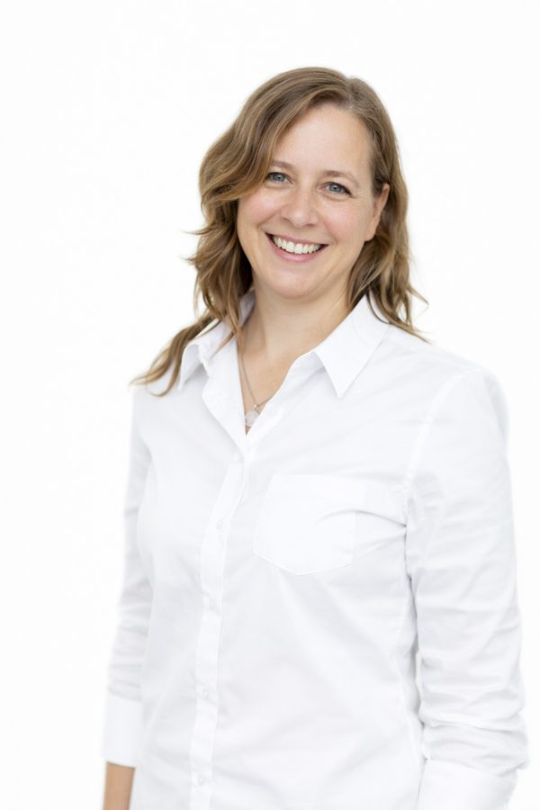
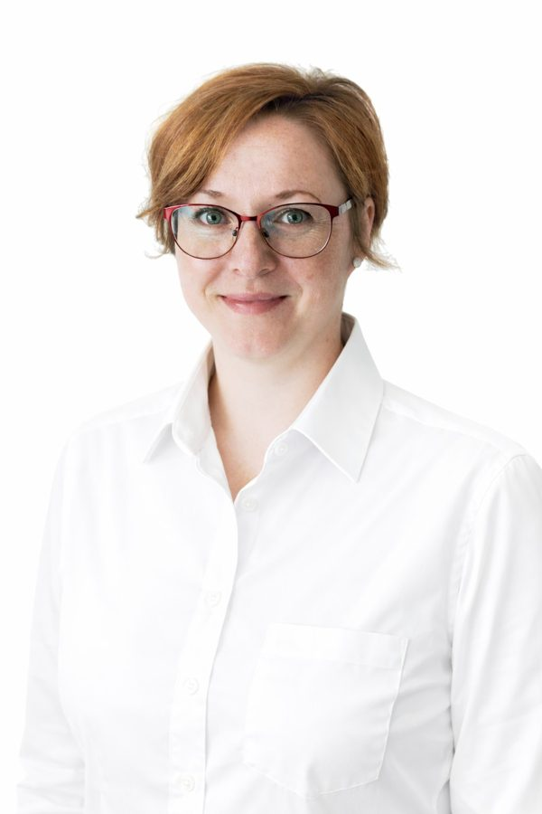
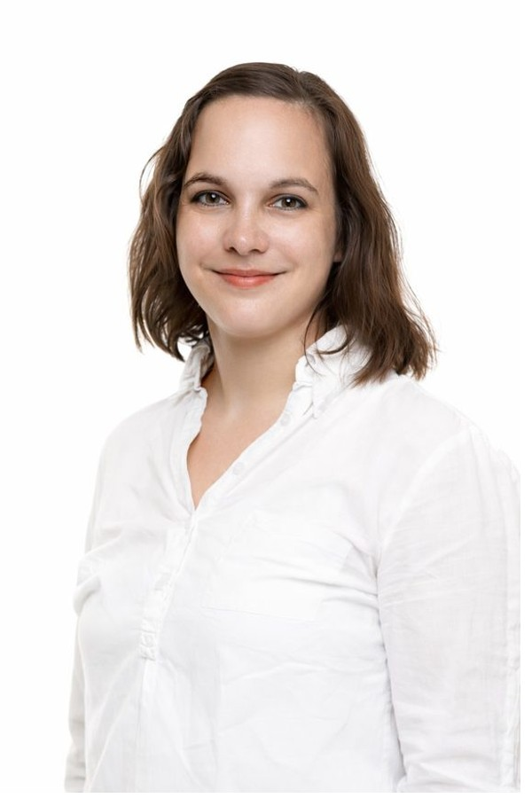

Mgr. Tomáš Debowski
Děti všech věkových kategorií, skolióza, těžká poranění
Pohyb se může stát skutečným lékem – když v sobě najdete víru, trpělivost a vytrvalost.
Profil →Objednat se k Tomášovi
Navzájem sdílíme znalosti a postupy. Každý z nás se věnuje jiné oblasti, a tak si vždycky můžete vybrat toho, kdo se soustředí právě na váš problém. A když je potřeba, poradíme se nad ním společně.









